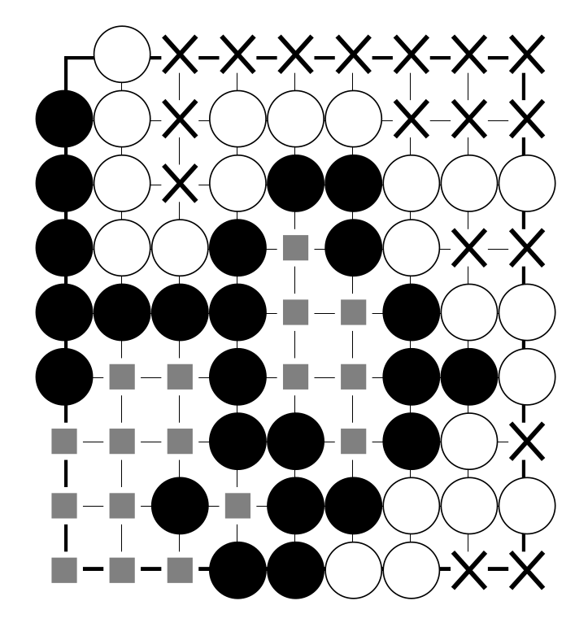
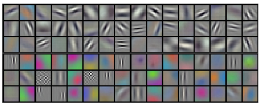
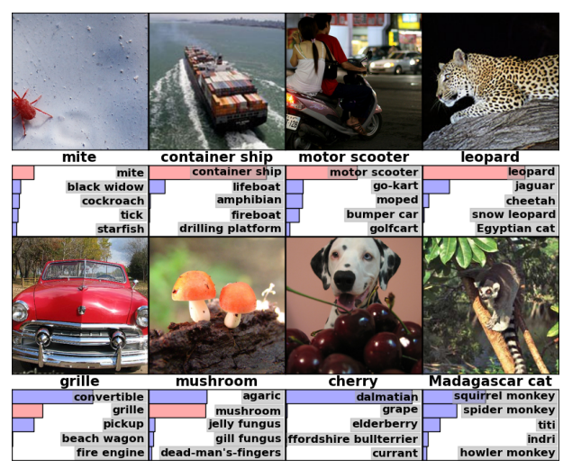
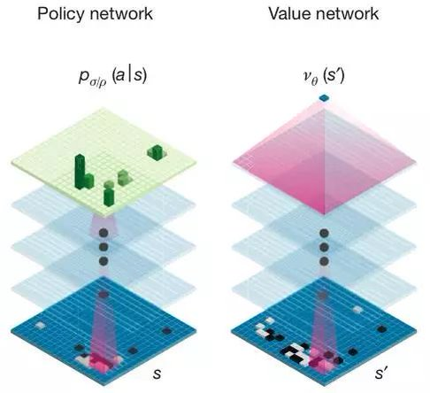
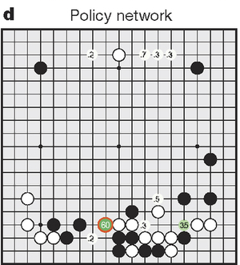
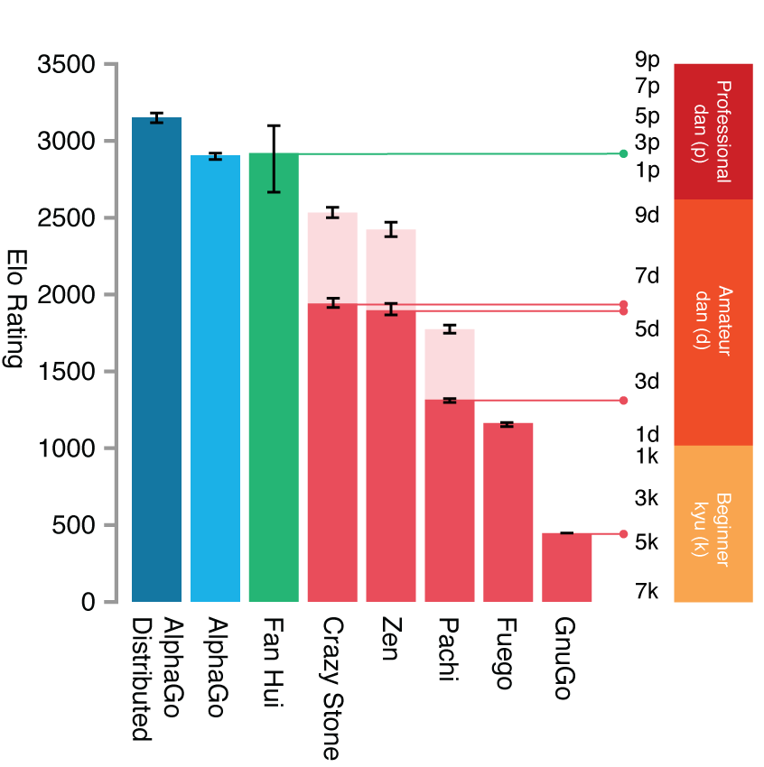

AlphaGo : Résoudre le jeu de Go avec l'apprentissage automatique
Par Hugo Mougard
Le 26 janvier 2021
DeepMind a publié un papier dans Nature le 27 janvier 2016 pour présenter AlphaGo.
AlphaGo est le premier programme à battre un pro humain sans coup d'avance.
Survol
- Jeu de Go
- Programmes précédents
- Réseaux de neurones à convolutions
- AlphaGo
- Conclusion
Jeu de Go
Des règles simples
Il y a deux règles importantes :
- Des pierres entourées par l'adversaire sont capturées
- Les pierres et les intersections contrôlées valent des points
Jeu de Go
Capture

Jeu de Go
Territoire
Jeu de Go
Un jeu complexe
Malgré ses règles simples, le jeu de Go est très dur à maîtriser :
- Nombre moyen de coups possibles par tour : 200
- Nombre moyen de coups dans une partie : 300
- Nombre de positions légales : Nombre d'atomes dans l'univers observable au carré
Survol
- Jeu de Go
- Programmes de Go précédents
- Réseaux de neurones à convolutions
- AlphaGo
- Conclusion
Programmes de Go précédents
Prérequis : arbre de décision d'un jeu

Programmes de Go précédents
Objectif d'un programme de jeu
Explorer l'arbre de décision du jeu efficacement pour trouver le meilleur coup.
Programmes de Go précédents
Min-max

Programmes de Go précédents
Min-max applicable au Go?
- Nombre moyen de coups possibles par tour : 200
- Nombre moyen de coups dans une partie : 300
→ 200300 coups à explorer
Programmes de Go précédents
Recherche arborescente Monte-Carlo
Approximation de min-max.

Survol
- Jeu de Go
- Programmes de Go précédents
- Réseaux de neurones à convolutions
- AlphaGo
- Conclusion
Réseaux de neurones à convolutions
Introduction
Approximateurs de fonctions complexes, qu'on considère « intuitives » en tant qu'humains.
Réseaux de neurones à convolutions
Application
Principalement la compréhension d'images et de textes.

Réseaux de neurones à convolutions
Architecture
Plusieurs couches de filtres successives.

Réseaux de neurones à convolutions
Filtres

Réseaux de neurones à convolutions
Filtres appris
Réseaux de neurones à convolutions
Application
Réseaux de neurones à convolutions
Relation au Go
Au lieu de travailler sur des pixels, les filtres travaillent sur des intersections.

Survol
- Jeu de Go
- Programmes de Go précédents
- Réseaux de neurones à convolutions
- AlphaGo
- Conclusion
AlphaGo
Introduction par DeepMind
AlphaGo
Cœur de l'approche
Augmenter la recherche arborescente Monte-Carlo aved deux réseaux de neurones à convolutions
AlphaGo
Réseau de coups
Predit le prochain coup étant donné la position
AlphaGo
Réseau de score
Predit le vainqueur étant donné la position.

AlphaGo
Intégration à MCTS

AlphaGo
Apprentissage supervisé
- 29M de positions tirées de 160k parties sur KGS
- 8M de positions tirées de parties sur Tygem
AlphaGo
Apprentissage par renforcement
- Faire jouer le réseau de coups contre ses versions antérieurs pour obtenir des données
- Améliorer les réseaux grâce aux données générées
AlphaGo
Hardware
À l'échelle de Google :
- 1202 CPUs
- 176 GPUs
- 40 cœurs CPU pour MCTS
AlphaGo
Performance 1/2
A battu Fan Hui, champion européen, 5-0.
AlphaGo
Performance 2/2
A battu Lee Sedol, grand champion du Go moderne, 4-1.

Prix pour le vainqueur : 1M$.
AlphaGo
AlphaGo Zero
19 octobre 2017 : plus d'apprentissage supervisé. Tout en renforcement !
AlphaGo
Alpha Zero
5 décembre 2017 : plus général. S'applique aux échecs, au shogi, …
AlphaGo
Mu Zero
19 novembre 2019 : n'a pas accès aux règles. Les infère.
Survol
- Jeu de Go
- Programmes de Go précédents
- Réseaux de neurones à convolutions
- AlphaGo
- Conclusion
Conclusion
- Des algorithmes de plus en plus généraux…
- … qui restent beaucoup plus gourmants en données qu'un humain